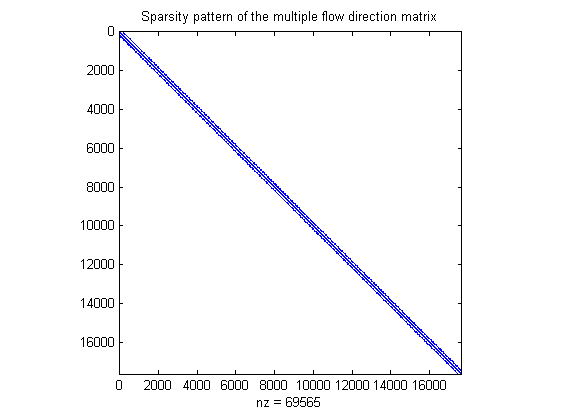

User Guide to TopoToolbox
TopoToolbox provides a set of Matlab functions that support the analysis of relief and flow pathways in digital elevation models. The major aim of TopoToolbox is to offer helpful analytical GIS utilities in a non-GIS environment in order to support the simultaneous application of GIS-specific and other quantitative methods.
TopoToolbox is written in the Matlab language and requires the Image Processing Toolbox for various functions.
Contents
About the User Guide
This user guide is intended as a basic introduction to the TopoToolbox. It won't give a comprehensive overview on the functions available but serves a documentation for a sample session.
Loading data
TopoToolbox supports data export from the ESRI ascii grid format with the function rasterread. In case your data is in a different format refer to the Matlab functions dlmread or imread.
Here we use the example Digital Elevation Model (DEM)
[dem,X,Y] = rasterread('exampleDEM.txt'); surf(X,Y,dem); axis image; shading interp; camlight

Some values you will need for calling some of the functions are cellsize and the matrix dimensions of the DEM.
cs = abs(Y(2)-Y(1)); siz = size(dem);
Fill sinks
Often DEMs feature erroneous topographic depressions that should be filled prior to flow path computation. You can obtain this by using the function fillsinks.
dem = fillsinks(dem);
Topographic derivates
TopoToolbox includes various functions to calculate topographic derivates.
H = hillshade(X,Y,dem,315,60); G = gradient8(dem,cs); [prof,plan] = curvature(dem,cs); imagesc(X(1,:),Y(:,2),H); axis image; axis xy colormap(gray) title('Hillshading') drawnow

colormap('default') imageschs(X,Y,dem,G); colorbar title('Slope') drawnow

imageschs(X,Y,dem,prof);
colorbar
title('Profile curvature')
drawnow

colormap('default') imageschs(X,Y,dem,plan); colorbar title('Planform curvature') drawnow

Flow direction and flow accumulation
The flow direction algorithm is the heart of TopoToolbox and various functions require the flow direction matrix as input arguments.
Calculate the single flow direction matrix
Ms = flowdir(X,Y,dem,'type','single'); spy(Ms) title('Sparsity pattern of the single flow direction matrix')

and determine the flow accumulation (upslope area).
As = flowacc(Ms,siz); imagesc(X(1,:),Y(:,2),As); axis image axis xy colorbar title('Flow accumulation based on single flow direction matrix')

For some applications the single flow direction algorithm may return too concentrated flow patterns. Dispersion of flow patterns can be analysed with the multiple flow direction algorithm.
Mm = flowdir(X,Y,dem,'type','multi'); spy(Mm) title('Sparsity pattern of the multiple flow direction matrix')
Calculate the upslope area based on the multiple flow direction matrix. Plotting the logarithm of the upslope area usually gives a good impression of the spatial flow patterns.
Am = flowacc(Mm,siz); imagesc(X(1,:),Y(:,2),log(Am)); axis image axis xy colorbar title('Logarithm of flow accumulation based on multiple flow direction matrix')

TopoToolbox offers several functions for flow direction matrix computation. flowdir is suited for all kind of variations of flow direction types and is very flexible. However, its application is limited to relatively small sized DEMs (around 600x600 elements). For huge DEM matrices the derivation of the multiple flow direction matrix may not even be possible due to memory constraints. Compare the memory requirements of the single and multiple flow direction matrix compared to the DEM.
whos('dem','Ms','Mm')
Name Size Bytes Class Attributes Mm 17640x17640 1254168 double sparse Ms 17640x17640 422584 double sparse dem 180x98 141120 double
While the single flow direction matrix requires roughly twice as much memory than the DEM, the multiple flow direction matrix needs 5 to 7 times the amount (depending on the mean number of downstream cells to each cell).
TopoToolbox has two functions that deals with this memory problem. flowdir_single is particularly designed for single flow direction matrix computation and is very memory efficient. flowacc_lm uses an iterative procedure to calculate the upslope area based on multiple flow direction, but it does not return the flow direction matrix. In case you are not sure what to use, refer to the function ezflowacc.
Functions based on the flow direction matrix
Various functions (dependencemap, flowdistance, flowdistanceds, influencemap, streamorder, ...) require the single flow direction matrix as input and in this section it is shown how these functions are applied.
First, let's calculate the drainage basins of the DEM. This can be done using the function drainagebasins. You may want to shuffle the colors so that the drainage basins can be more easily distinguished in a plot (shufflelabel). In addition, let's denote the area of each basin in the map.
DB = drainagebasins(Ms,siz); nrDB = numel(unique(DB)); % nr of drainage basins STATS = regionprops(DB,'PixelIdxList','Area','Centroid'); imageschs(X,Y,dem,shufflelabel(DB)); hold on for run = 1:nrDB; text(X(1,round(STATS(run).Centroid(1))),Y(round(STATS(run).Centroid(2)),1),... num2str(round(STATS(run).Area * cs))); end hold off

It may also be interesting to know the distance from each point in the DEM to the nearest downslope channel. You can calculate this with flowdistance. First, let's define a channel matrix. Here we use a rather arbitrary value of a specific contributing area of 100 necessary to form concentrated flow.
CHANNEL = As>100; D = flowdistance(Ms,X,Y,dem,CHANNEL); imagesc(X(1,:),Y(:,1),D); axis image; axis xy title('flow path distance [m] to channel') colorbar

You can also use this function to calculate a hydrograph of a specific basin delineated in the previous example. The assumptions of this hydrograph are very basic: Equal flow velocities in each hillslope cell and instantaneous transfer in channels.
[ignore,ixbasin] = max([STATS.Area]); d = D(DB==ixbasin & ~CHANNEL); hist(d,30); xlabel('time*velocity') ylabel('discharge')

Export output
At the end of a session you may want to export the generated matrices to a different format, so that you can use them for e.g. a map layout. TopoToolbox provides the function rasterwrite, which exports a georeferenced (X,Y) matrix to an ESRI ascii grid. You can import this matrix with ArcGIS using ArcToolbox/Conversion Tools. Other functions that might be helpful are imwrite and dlmwrite.
Reference
Schwanghart, W., Kuhn, N.J. (2010): TopoToolbox: a set of Matlab functions for topographic analysis. Environmental Modelling & Software, 25, 770-781. [DOI: 10.1016/j.envsoft.2009.12.002]
History
This user guide was updated last: April 7., 2010.